Comprehensive Exam
Effects of Building Geometry on Extreme Wind Pressures on Wall Components and Cladding
Xiaohan Mei
Supervisor: Dr. Jin Wang
June 5, 2026
Example of building envelope damage
Localized extreme wind pressure
→
Envelope failure
→
Multiple damage consequences
Gas leakage
Damaged gas lines may leak and create fire or explosion risk.
Water intrusion
Rain entering through wall openings can damage interiors.
Electrical damage
Water reaching wiring can cause short circuits or outages.
Air leakage
Air leaks increase drafts, energy loss, and discomfort.
Falling facade elements
Loose panels or glass can fall and become dangerous debris.
Pedestrian injury risk
Falling debris can injure people near the building.
Once the envelope is breached, damage may extend well beyond the local component itself.
Building geometry→Flow separation / wake structure→Wall pressure topology
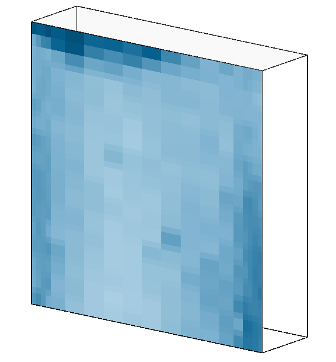
Slender / narrow geometry
Extreme pressures may appear near the upper-central region of the wall.
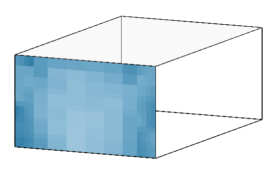
Low-rise / squat geometry
Extreme pressures may concentrate near wall edges and corner-influenced regions.
Geometry modifies the flow; the flow controls the pressure pattern.
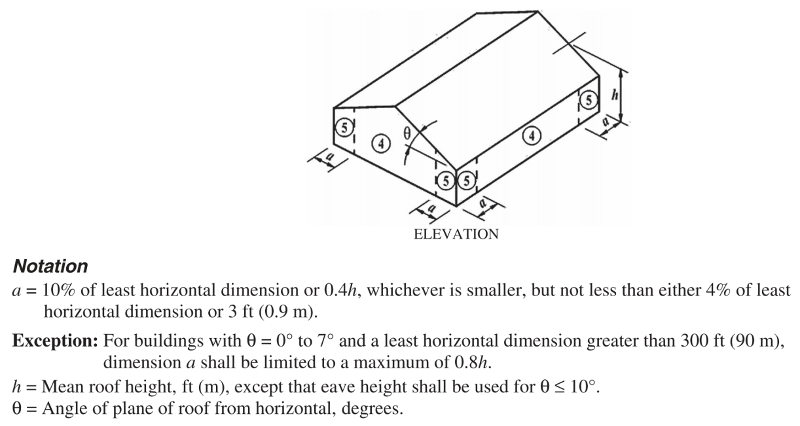
Code zoning definition
A single straight-line template may not represent geometry-dependent wall pressure topologies.
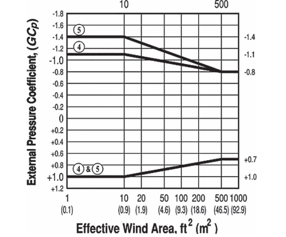
\(GC_p\)-area curve
Effective wind area is necessary, but geometry may also influence extreme-pressure magnitude.
A geometry-insensitive treatment may be inadequate across buildings with different dimensions and proportions.
Gap 01
Limited systematic classification
Known: Previous studies identify pressure features for selected models.
Missing: A systematic classification across building geometries is still limited.
Need: Build wall pressure-pattern classes before discussing zones or coefficients.
Case-basedLimited rangeNo class map
Gap 02
Zoning not linked to flow mechanisms
Known: Wall pressure zones can be identified from pressure patterns.
Missing: Existing zoning is often not connected to the governing flow mechanism.
Need: Relate each zone to the flow process that controls its pressure behavior.
Unlinked zoningFlow mechanismPhysical meaning
Gap 03
Unclear geometry effect on magnitude
Known: Code-style \(GC_p\) curves mainly use effective wind area.
Missing: The role of \(H\), \(B\), \(D\), and aspect ratios is not clear.
Need: Test geometry-normalized parameters for pressure magnitude prediction.
MagnitudeGeometry scale\(GC_p\) curves
A systematic framework is needed to classify pressure patterns, interpret flow mechanisms, and quantify geometry effects.
The objectives connect classification, aerodynamic zoning, and \(GC_p\) prediction within one geometry-dependent framework.
Critical regions are mainly near wall corners and edge zones, where extreme wall pressures often occur.
A new experiment with systematic geometry variation and dense wall pressure measurements is required.
Technical Route
From Motivation to Method
The study moves from a unified database to pattern classification, geometry-dependent zoning, and geometry-informed \(GC_p\) relationships.
Expected output: pressure-pattern classes, aerodynamic zoning, and \(GC_p\)-area-geometry relationships.
Output: a unified wall-pressure database for geometry-dependent C&C extreme-pressure analysis.
Critical wind direction
Event-averaged maps
Conditional POD
Spectral POD
\(x_s=f(B)\)
\(B\)
\(H\)
High-suction region
Stable region
Different mechanisms require separate discussion of pressure behavior and \(GC_p\) relationships.
Conventional \(GC_p\)-\(A\)
Large scatter across geometries.
Geometry-normalized \(GC_p\)-\(A^*\)
Improved convergence after geometry normalization.
\(\frac{A}{H^2}\)
\(\frac{A}{B^2}\)
\(\frac{A}{D^2}\)
\(\frac{A}{HB}\)
\(\frac{A}{HD}\)
\(\frac{A}{BD}\)
Output: geometry-informed \(GC_p\) curves for each wall class and pressure region.
Progress
Current Work and Data Preparation
The experimental matrix, terrain validation, NIST-UWO standardization, and timeline set up the next analysis stage.
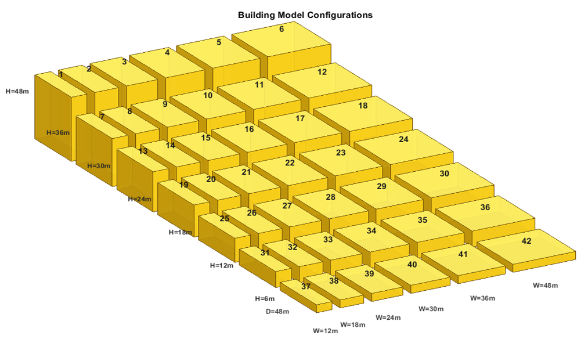
Systematic model matrix
Scale \(1{:}100\); \(D=48\,\mathrm{m}\); \(B=12\text{--}48\,\mathrm{m}\); \(H=6\text{--}48\,\mathrm{m}\).
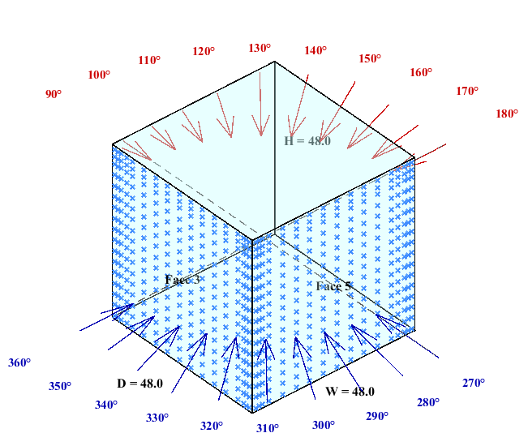
Tap layout and wind directions
Dense wall tap layout with edge refinement and 20 wind-direction cases.
\(42\) models
\(6\times7\) \(B\)-\(H\) matrix
\(20\) wind directions
\(D=48\,\mathrm{m}\) fixed depth
Open
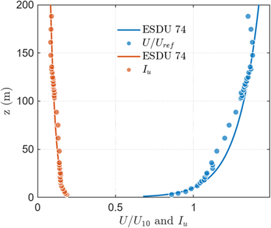
Mean wind profile and turbulence intensity
Suburban
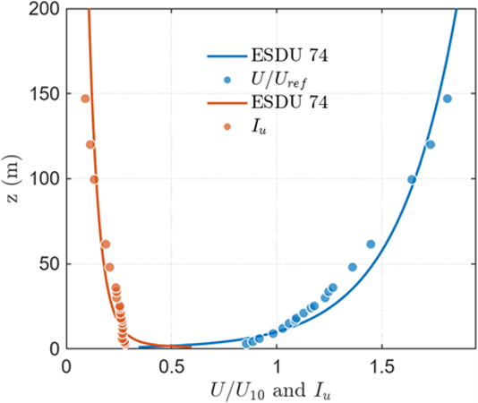
Mean wind profile and turbulence intensity
Open
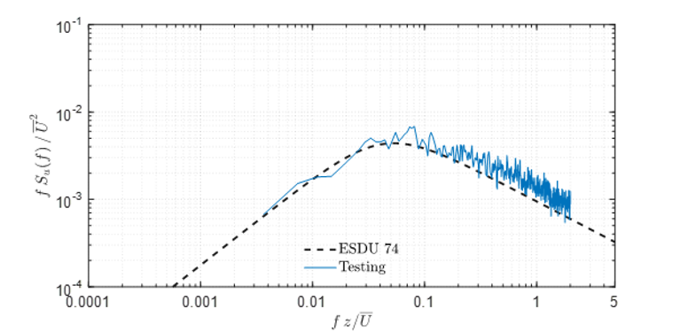
Velocity spectrum at 48 m
Suburban
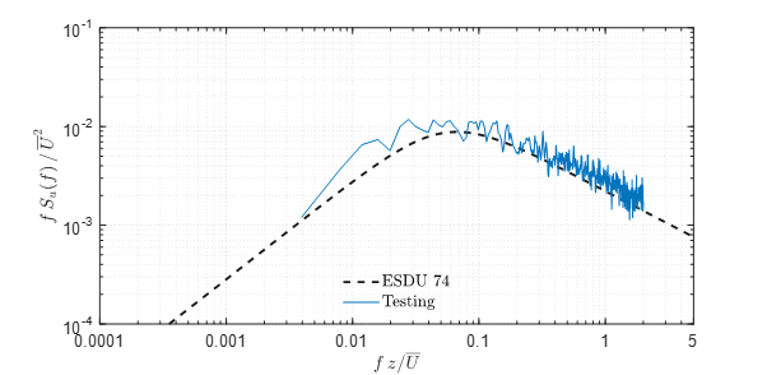
Velocity spectrum at 48 m
Reasonable agreement with ESDU references supports the reliability of the simulated boundary-layer flows.
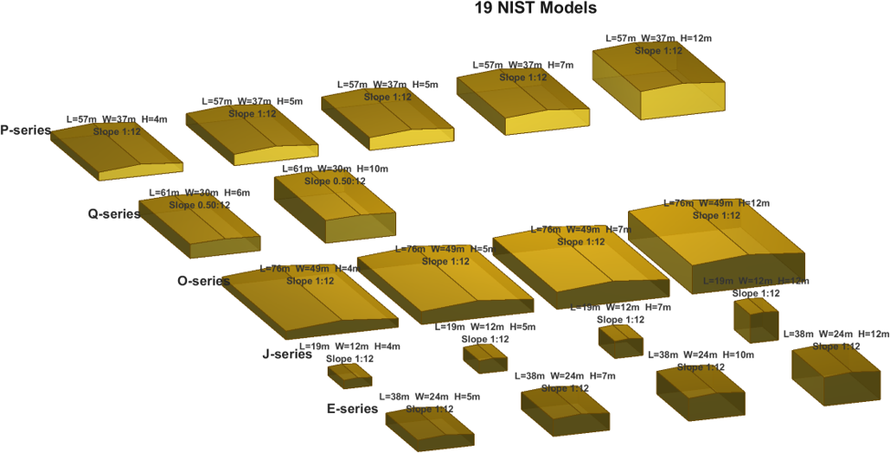
Model dimensions
Supplementary low-rise cases for database expansion and comparison.
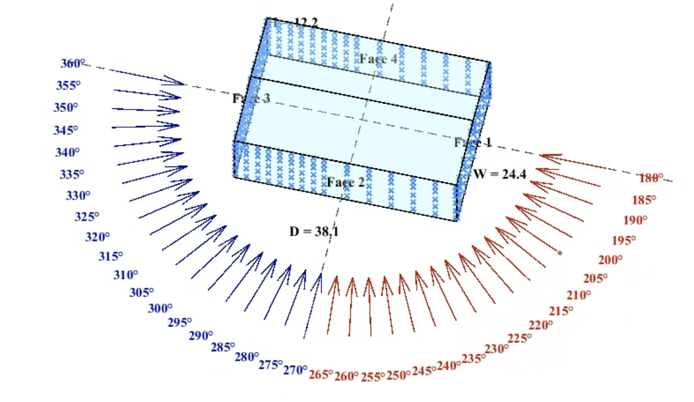
Tap layout and wind directions
Raw wall cases need alignment before systematic comparison.
Raw data
→
Direction alignment
→
Wall mirroring
→
Wall merging
→
Standardized dataset
Output: standardized NIST-UWO wall-pressure cases for unified analysis.
Closing
Thank You
Questions and Discussion
Xiaohan Mei
Supervisor: Dr. Jin Wang
June 5, 2026